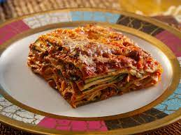

Italian Lasagna Bolognese

It’s the authentic recipe born in the city of Bologna,
WITHOUT MOZZARELLA. Oh yes, because,
contrary to
popular belief, the authentic classic
recipe of
Lasagna Bolognese does NOT want mozzarella.
Lasagna with mozzarella is a VARIANT
of this
classic Lasagna recipe and you can
find it mainly
in southern Italy, often together with ricotta.
Ingredients
* For the Bolognese Sauce
- 300 g (10 oz) of coarsely ground beef
- 150 g (5 oz) of sliced pancetta
- 300 g (1 1⁄4 cup) of tomato passata or crashed peeled tomato
- 1 small carrot (about 50 g)
- 1 celery stalk (about 50 g)
- 1 small onion (about 50 g)
- 100 ml (1⁄2 cup) of dry white wine
- 100 ml (1⁄2 cup) of whole milk
- 300 ml (1 1⁄2 cup) of meat broth
- 3 tablespoons of extra virgin olive oil
- fine salt
- freshly ground black pepper
* For the Lasagna Noodles
- About 14 lasagna
- Plenty of freshly grated Parmigiano cheese(at least 200 g = 1 cup).
For Bèchamel Sauce
- 500 ml (2 cups) of whole milk
- 50 g (1,7 oz = 3 1/2 tablespoons) of unsalted butter
- 50 g (1,7 oz = 4 tablespoons) of all-purpose flour
- fine salt to taste
- freshly grated nutmeg
Steps for Bolognese Sauce
-
First cut the carrot, celery and onion in very
tiny pieces.
The more the better. Set aside.
Then cut the pancetta
as finely as possible with
a sharp knife or a food processor.
Now place
the minced pancetta in a saucepan.
Cook on
medium heat for about 5 minutes,
stirring with
a wooden spoon from time to time.
-
Add the extra virgin olive oil and the finely
chopped
vegetables. Stir and cook over medium
heat for 5 minutes, stirring. Then add the
ground beef.
-
Stir and cook for 5 minutes over medium / high
heat.
Now put the heat on high and add the
white
wine. Stir and let it evaporate.
-
Finally add the tomato passata. Cover with a lid
and
simmer over LOW heat for about 2 hours.
If
the sauce dries too much during cooking,
add a
little meat broth. Towards the end,
add the
milk to dampen the acidity of the tomato.
Season with salt and pepper. Bolognese Sauce
is ready
when you can see an oily, creamy
sauce on the surface.
While the Bolognese sauce is cooking, make the béchamel.
Steps for Bechamel Sauce
-
In a saucepan, melt the butter over low heat
then add the flour
– using a flour sieve –
while mixing QUICKLY with a whisk.
Cook for 30
sec/1 min stirring, so the flour becomes
tastier
and absorb the butter fats.
The mixture of
butter and flour is called roux and it should
be a nice golden color. Now set aside and let
it cool. Meanwhile heat the milk, without
bringing to a boil.
-
Pour the milk slowly over the roux, while
stirring vigorously
with a whisk to prevent
the formation of lumps. When the milk
is
completely poured over the roux sauce,
put the
saucepan back on low heat.
Keep mixing
constantly, until you have a fairly thick
consistency
(about 10/15 minutes). The sauce
is ready when it sticks to the back of a wooden
spoon. Finally, add a pinch of fine salt and
grated nutmeg to taste.
Main Preparation
-
Preheat the oven at 190° (380 F). Spread on the
bottom
of a baking dish (better ceramic or
pirex) two tablespoons of bechamel.
Then put
a lasagna noodle over it, trying to cover
the entire bottom of the pan. If one
lasagna is not enough for you, use
another
one, whole or in half, depending on the
size of the lasagna.
Layer on two
tablespoons of bolognese sauce and
two of bechamel sauce.
-
With the help of a tablespoon, cover the entire
surface of the lasagna.
In the end, sprinkle
two tablespoons of grated Parmigiano.
-
Repeat these steps for at least five layers
(lasagna – bolognese sauce – bèchamel –
parmigiano),
in any case up to fill your
baking dish.
-
Finish by covering the last layer with plenty of
Parmigiano cheese,
that cooking make a crispy crust.
Bake at 190°
(380 F) for about 30 minutes.Let cool
Lasagna Bolognese
out of the oven for 10 minutes
before serving.
Home Page